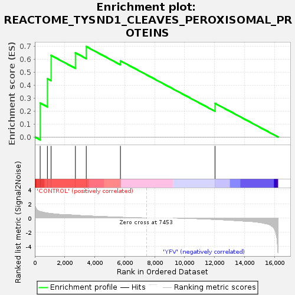
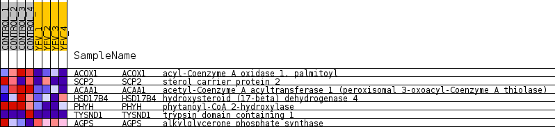
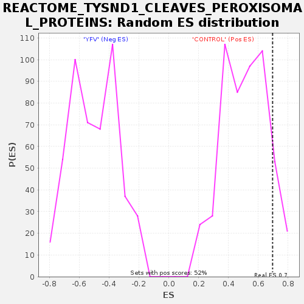

| Dataset | MATRIZ_GSE99081_collapsed_to_symbols.gsea_CLASE_99081.cls#CONTROL_versus_YFV |
| Phenotype | gsea_CLASE_99081.cls#CONTROL_versus_YFV |
| Upregulated in class | CONTROL |
| GeneSet | REACTOME_TYSND1_CLEAVES_PEROXISOMAL_PROTEINS |
| Enrichment Score (ES) | 0.69673246 |
| Normalized Enrichment Score (NES) | 1.3585556 |
| Nominal p-value | 0.07514451 |
| FDR q-value | 1.0 |
| FWER p-Value | 1.0 |

| SYMBOL | TITLE | RANK IN GENE LIST | RANK METRIC SCORE | RUNNING ES | CORE ENRICHMENT | |
|---|---|---|---|---|---|---|
| 1 | ACOX1 | acyl-Coenzyme A oxidase 1, palmitoyl | 358 | 0.904 | 0.2617 | Yes |
| 2 | SCP2 | sterol carrier protein 2 | 840 | 0.691 | 0.4489 | Yes |
| 3 | ACAA1 | acetyl-Coenzyme A acyltransferase 1 (peroxisomal 3-oxoacyl-Coenzyme A thiolase) | 1087 | 0.621 | 0.6287 | Yes |
| 4 | HSD17B4 | hydroxysteroid (17-beta) dehydrogenase 4 | 2710 | 0.381 | 0.6486 | Yes |
| 5 | PHYH | phytanoyl-CoA 2-hydroxylase | 3434 | 0.295 | 0.6967 | Yes |
| 6 | TYSND1 | trypsin domain containing 1 | 5715 | 0.098 | 0.5869 | No |
| 7 | AGPS | alkylglycerone phosphate synthase | 12027 | -0.195 | 0.2595 | No |

